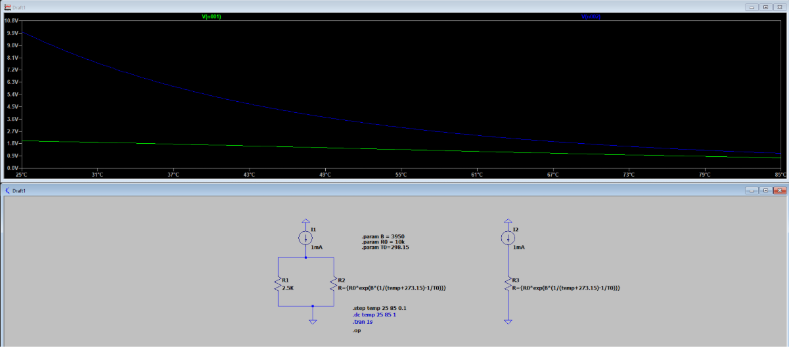
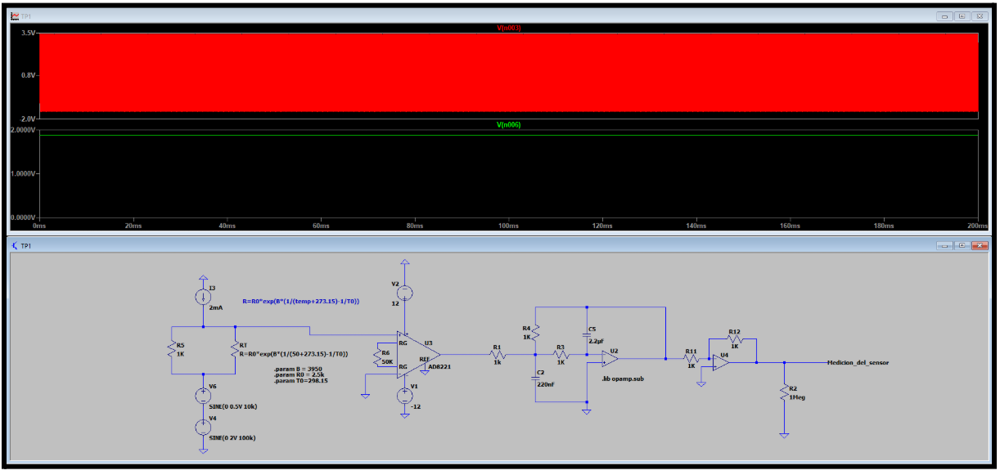
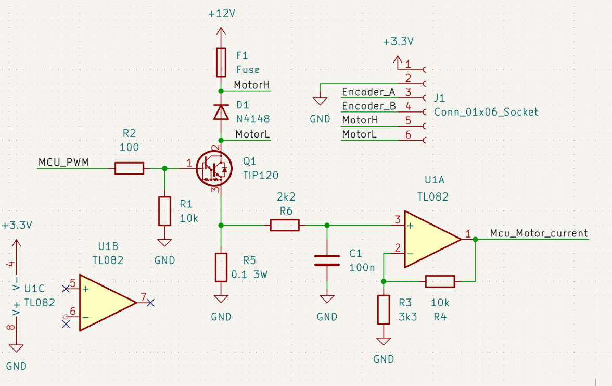
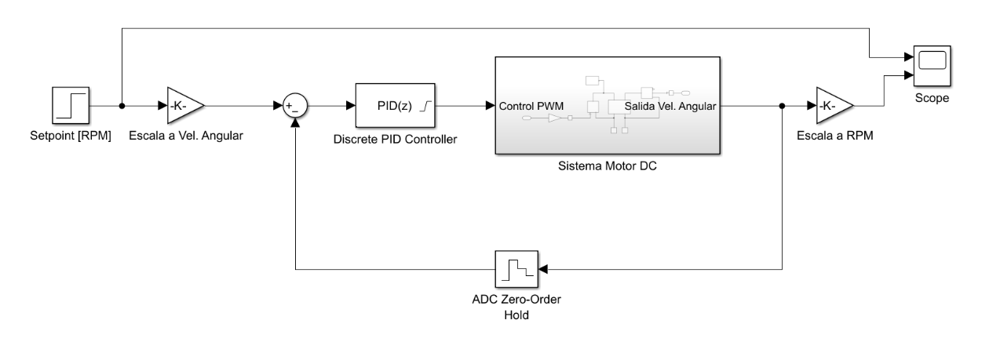
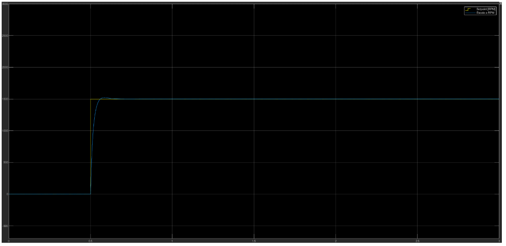
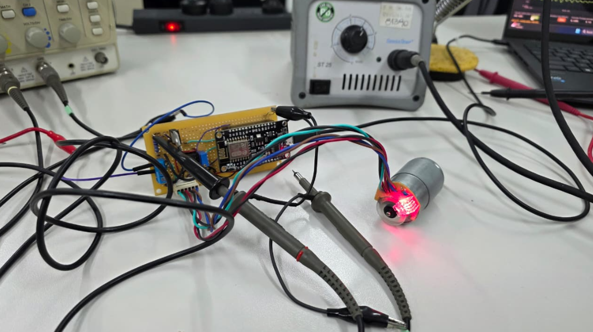
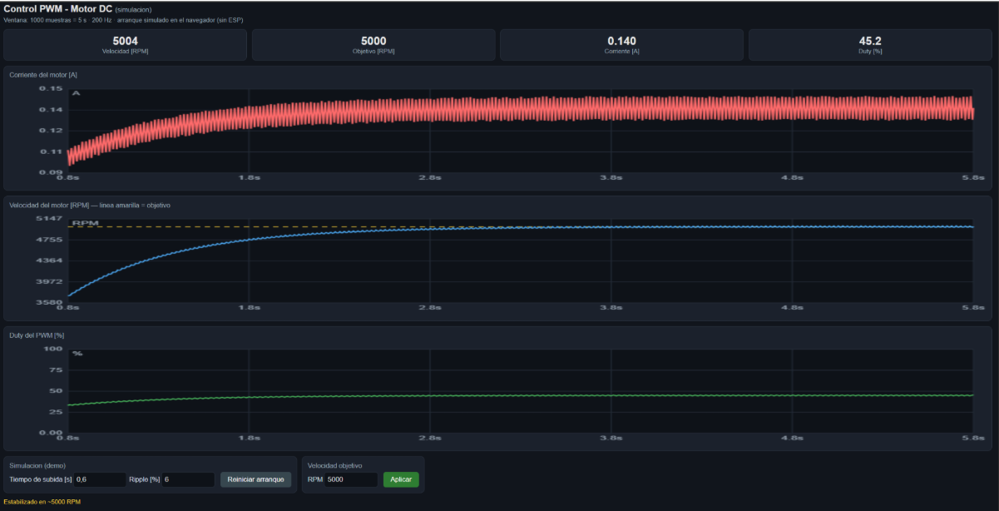
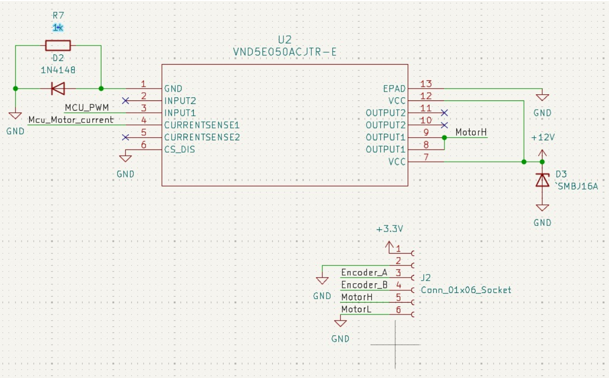

2026 · Electrónica Aplicada al Automotor · UTN FRBA
Un PID para el ventilador de un radiador
Este año, en la materia de electrónica automotriz, armamos con dos compañeros un control de temperatura del refrigerante: un lazo cerrado que regula la velocidad del ventilador del radiador con un controlador PID. Además, rediseñamos la etapa de potencia con un driver pensado para el automóvil, y en la materia también analizamos una ECU real (más abajo, solo como mención).
1. La idea
2. El sensor: un termistor que no es lineal
3. El motor y la etapa de potencia
4. Simulaciones
5. Laboratorio
6. Una mención: la ECU
7. Rediseño con un driver automotriz
1. La idea
El sistema funciona en lazo cerrado. Mide la temperatura del refrigerante y, según cuánto se aleja de lo deseado, ajusta la velocidad del ventilador. La potencia se comanda con una señal PWM de 1 kHz, y la realimentación sale de un encoder incremental que mide la velocidad real del motor. Además se mide la corriente del motor, como diagnóstico para detectar fallas.
Un controlador PID combina tres acciones sobre el error entre la velocidad deseada y la medida: una proporcional a cuánto vale el error, una que acumula el error pasado (y elimina el error que queda en régimen) y una que anticipa su tendencia. Ajustando sus ganancias se logra que el motor llegue rápido a la velocidad pedida sin pasarse.
2. El sensor: un termistor que no es lineal
Para medir la temperatura del líquido se usó un termistor NTC: su resistencia baja cuando la temperatura sube. El problema es que esa relación es marcadamente no lineal, casi exponencial. Con una excitación de 1 mA, en la simulación la tensión del NTC solo cae de unos 10 V a unos 1 V entre 25 y 85 °C. El truco para domarlo es barato: un resistor en paralelo aplana la curva y la deja mucho más lineal.

Como la variación de resistencia es amplia, no hizo falta un puente de Wheatstone. La señal pasa por un amplificador de instrumentación y por un circuito que vigila al sensor, para detectar si está en cortocircuito o en circuito abierto.
Un filtro de 10 Hz
El dato clave está en la hoja de datos: el sensor tiene una constante de tiempo térmica de 15 segundos. La temperatura cambia muy despacio, y en un auto el ruido eléctrico es mucho más rápido (de ahí las normas CISPR 25 e ISO 7637). Entonces se puso un filtro pasa-bajos activo de segundo orden (Sallen-Key) con corte en 10 Hz. Se probó simulando dos interferencias, una de 10 kHz y 0,5 V y otra de 100 kHz y 2 V, con el sensor a 50 °C: el filtro las elimina y la medición queda limpia.

3. El motor y la etapa de potencia
El actuador es un motor de corriente continua reciclado de un plotter, que ya traía un encoder incremental. Para manejarlo, la idea inicial era un MOSFET, pero se terminó usando un par Darlington TIP120, con un fusible de 1 A contra cortocircuitos. El microcontrolador recibe tres entradas: dos digitales (los dos canales del encoder, de los que se saca velocidad y sentido de giro) y una analógica (la corriente del motor).

4. Simulaciones
Para simular de verdad el motor, midimos la bobina con un medidor LCR (UNI-T UT622A): unos 6,4 mH de inductancia. Con eso se simuló el arranque en LTspice con un PWM al 50 %: el motor se establece en aproximadamente 1 ms, con un ripple de corriente de unos 46 mA y un ripple de tensión de 1,8 mV.
El lazo de control completo se armó en Simulink, con un PID discreto, el modelo del motor y un bloque que representa el muestreo del conversor analógico-digital.


5. Laboratorio
Después vino la parte real: el motor, una placa de prueba con su etapa de potencia y un microcontrolador ESP, con el osciloscopio midiendo. Para ajustar el lazo se hizo un dashboard web: desde una página se cambia el ciclo de trabajo del PWM, se modifican las ganancias Kp y Ki y se fija la velocidad objetivo, que en las pruebas fue de 5000 rpm. El ensayo fue sin carga y con 12 V; bajo carga la respuesta sería distinta y el ciclo de trabajo, mayor.


6. Una mención: la ECU
En la materia también analizamos una ECU automotriz real (la computadora de un motor): con la placa física y sus esquemáticos, la tarea era identificar sobre el circuito qué componente cumple cada función. Por seguridad, y por tratarse de material de clase, no publico imágenes ni detalles de esa placa. Lo que me llevé es la idea general: un bloque que decide y, aparte, etapas de potencia que hacen el trabajo pesado, cada una con sus protecciones.
7. Rediseño con un driver automotriz
Con eso en mente, rediseñamos la etapa de potencia del motor con un integrado pensado para este mundo: el VND5E050, de ST. Es un driver de lado alto de dos canales, de unos 50 mΩ por canal, que trae adentro limitación de corriente, protección térmica, detección de sobrecarga, cortocircuito y carga abierta, y una salida que informa la corriente. O sea, hace solo lo que en el primer diseño había que armar con componentes sueltos.

Las decisiones de diseño, con sus datos
- La resistencia de masa. La hoja de datos pide una resistencia en el pin de masa. Según el cálculo debía estar entre 60 y 100 Ω; con 81 Ω, en el peor caso (batería invertida) se disipan casi 2 W. Demasiado. Se tomó la segunda alternativa: un diodo en serie con la masa y una resistencia de 1 kΩ en paralelo. El diodo bloquea la batería invertida casi sin disipar, y el kΩ da camino de retorno al motor, que es una carga inductiva. Costo: un corrimiento de unos 600 mV en los niveles.
- Un nivel lógico justo. Ese corrimiento agrava un problema que apareció al revisar la protección de entrada: con una salida alta del microcontrolador de apenas 2,64 V, comandar directo al integrado no garantiza el umbral de entrada. Lo correcto sería un level shifter a 5 V. Quedó como mejora, y se adoptaron los valores que recomienda la hoja de datos (10 kΩ y 10 nF en la entrada).
- Sensado de corriente. Una resistencia de 6,2 kΩ hace que la salida de corriente recorra todo el rango del conversor analógico-digital. Como el sistema usa un solo integrado, el pin que permite compartir el sensado se conectó a masa.
- El TVS contra el load dump. En un auto, si se desconecta la batería con el alternador cargando, aparece un pico de tensión enorme. Se agregó un diodo TVS SMBJ16A de 600 W, que clampea alrededor de 26 V, bien por debajo del máximo que soporta el integrado.